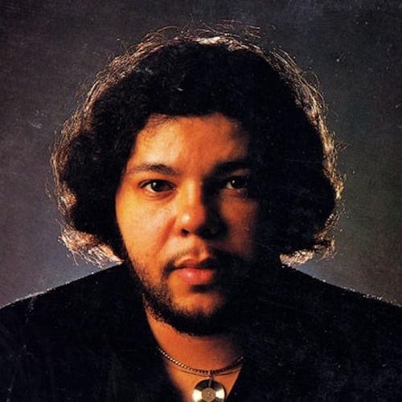

Ronn Matlock
Ronn Matlock from Detroit, Michigan, United States, was an American songwriter and singer who made a brief recording appearance on the soul scene in 1979; however, his musical talents were utilised on many projects over the years. He stopped recording due to production company management difficulties.
Complete Discography & Tracklists (1)